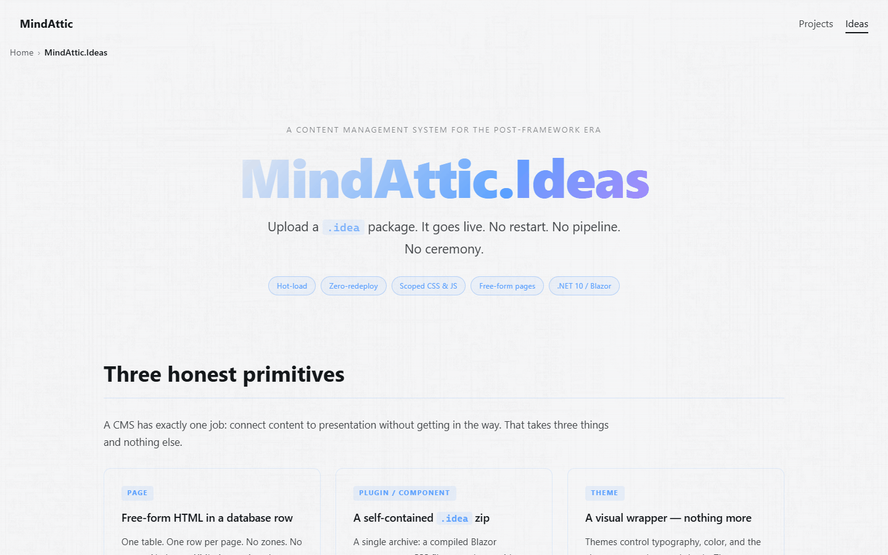
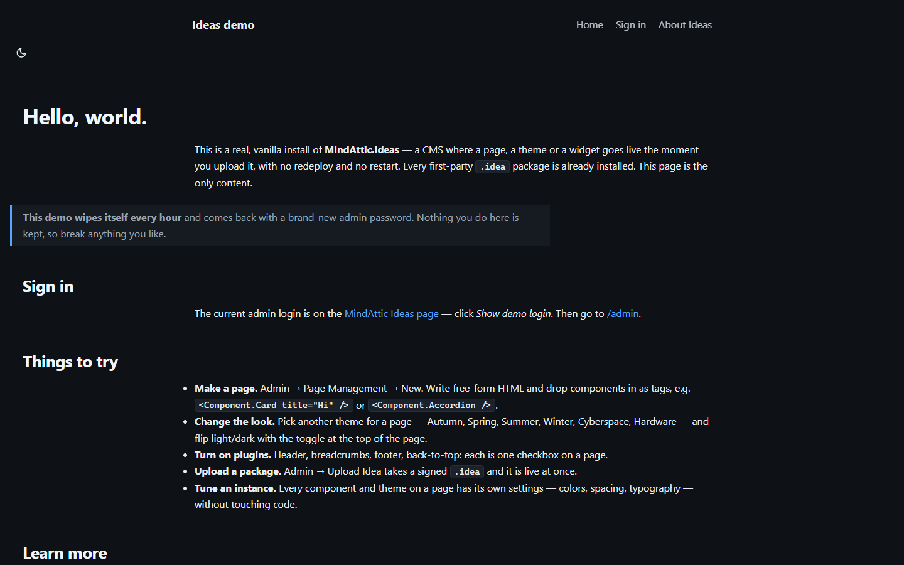
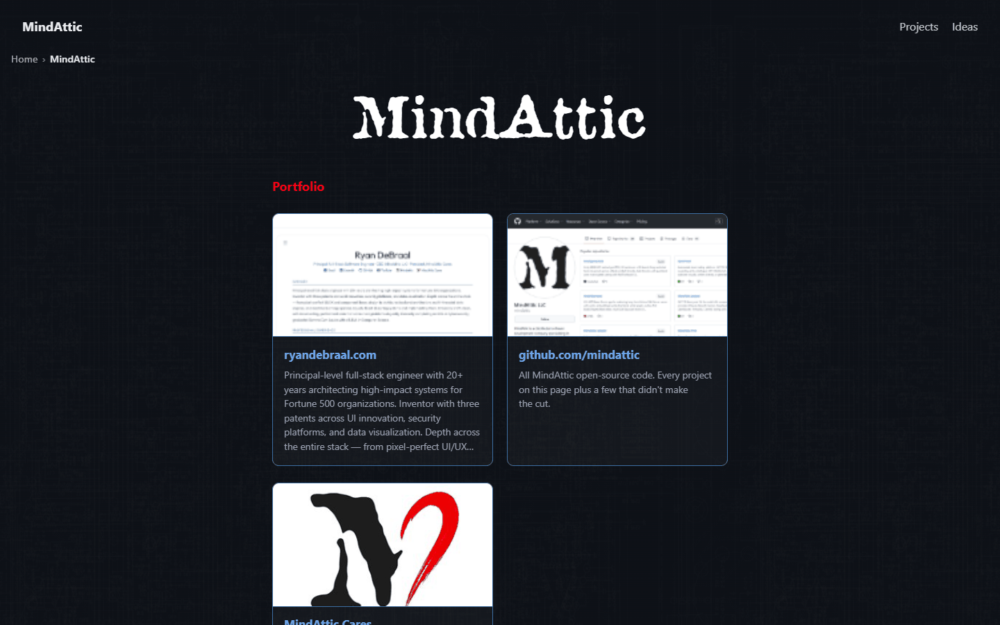

MindAttic.Ideas
A single-deployment Blazor CMS for .NET 10: upload a .idea package and a page, theme, plugin or component goes live at once, with no redeploy and no app restart.

Try it: the public demo at mindattic-ideas-demo.azurewebsites.net is a vanilla install with every first-party package, wiped and re-provisioned every hour. The current admin login is shown (behind a human check) on the Ideas page of the company site, which itself runs on Ideas.
Why
- Host many pages, and many domains, from one App Service, one app pool and one database, instead of one web app per landing page.
- Ship a new page, theme or widget by uploading a zip. It is live the moment the upload finishes: no pipeline, no restart.
- Never break a live page by shipping. Versions are whole numbers that coexist, so
V2lands besideV1and pinned pages keep working. - Never show a crash for a missing piece. A missing or disabled reference renders a clickable placeholder and raises an Admin Inbox alert.
- Write pages as free-form HTML. There are no zones, panes, slots or grids to fight, the opposite of DotNetNuke's fixed-layout model.
- Move a hand-built site between environments with one export/import file, packages included.
Features
Authoring
- Data pages: free-form
BodyHtml,PageCssandPageJsstored in the database, edited in the admin UI. This is the primary, zero-deploy path. - Code pages: a compiled
.razorPageBasesubclass shipped as a.idea, for real Blazor C# interactivity. A page can switch between the two as a row edit. - Composition by tag:
<Component.Card />,<Plugin.Tooltip />,<Theme.Cyberspace />, with attributes flowing through as typed settings. - Every Theme, Plugin and Component instance is configurable from a schema-generated admin editor, with Copy and Paste Configuration between instances.
- Every theme ships a light and a dark palette; the ThemeToggle plugin switches them without a flash of the wrong mode.

Packaging and versioning
- The
.ideapackage is a plain zip with one requiredidea.jsonmanifest. Data packages install with zero build and zero recycle. - Compiled packages load into a per-package collectible
AssemblyLoadContext, so uploads need no app-pool restart. - Whole-number versions (
V1,V2), version-specific disable, and reference-guarded delete. - Page history in SQL Server temporal tables: every page version records which citizen versions it carried.
- The
ma-ideaCLI packs, inspects, lists, verifies, signs and wraps packages as NuGet packages, all offline. - Every
.ideacarries its own RSA-PSS/SHA-256 content signature, verified at the single install choke point.
Operations
- One deployment, many domains: each Site row has host bindings, so two domains can both own a
/frontpage. - Portable
.idealistfiles move authored content (pages, settings, media, packages list) between environments. - Media is stored on local disk or Azure Blob, chosen by config, always addressed as
/_media/{uid}. - Sign-in through MindAttic.Authentication; credentials through MindAttic.Vault; passwordless managed identity in Azure.

Quick start
Prerequisites: the .NET 10 SDK, SQL Server LocalDB (the host falls back to (localdb)\MSSQLLocalDB database MindAtticIdeas when no ConnectionStrings:Ideas is configured), and the machine-local MindAttic.Vault files described in docs/DEV_LOGIN.md.
git clone https://github.com/mindattic/MindAttic.Ideas.git
cd MindAttic.Ideas
dotnet build MindAttic.Ideas.slnx -c Debug
dotnet test src/MindAttic.Ideas.Tests/MindAttic.Ideas.Tests.csproj
dotnet run --project src/MindAttic.Ideas.BlazorThe host listens on https://localhost:7207 and http://localhost:5229 (Properties/launchSettings.json). Sign in at /login as admin with the Vault bootstrap token; you are forced to change the password on first sign-in (docs/DEV_LOGIN.md). Then open /admin to create pages and upload .idea files.
launch.bat runs tools/deploy.ps1 -Launch, which rebuilds, publishes to a local folder and launches that fresh copy.
How it works
A Page is free-form. A Theme wraps it. Plugins activate site-wide behaviour. Components drop into exact positions. Inline CSS and JS are yours.
upload/CLI a .idea (plain zip)
|
v
+--------------------------------------------------------------+
| MindAttic.Ideas.Blazor (Blazor Web App, global InteractiveServer)
| PageHost /{*slug} --> resolve (SiteId, Slug) -> Theme -> render
| CmsHead (fixed CSS cascade) /_ideas/{Kind}/{key}/{ver}/... assets
| /admin (Admin policy) Vault + Legion + Authentication
+-----------+----------------------------------+---------------+
| uses | uses
+-----------v------------+ +------------v----------------------+
| MindAttic.Ideas.Core | | MindAttic.Ideas.Packaging |
| CmsDbContext (EF, SQL,| | manifest kernel, reader, |
| temporal Pages) | | validator, packer, SHA-256 |
| ContentCatalog | | (pure, IO-free) |
| IncludeExpander | +------------+----------------------+
| RawContentGate | |
| collectible ALC load | +------------v----------------------+
+-----------+------------+ | MindAttic.Ideas.Sdk (ma-idea CLI) |
| references +-----------------------------------+
+-----------v-----------------------------------------------------+
| MindAttic.Ideas.Abstractions (frozen v1 SDK, MAJOR pinned at 1) |
| IdeaBase + PageBase / PluginBase / ThemeBase / ComponentBase |
| refs ONLY Microsoft.AspNetCore.Components + System.Text.Json |
+------------------------------------------------------------------+Pages resolve by (SiteId, Slug) through one catch-all PageHost; there is no per-page routing, so a runtime-loaded type renders with zero router changes. The unit you install is a .idea zip; what it contains is one of four content kinds, all deriving from IdeaBase (src/MindAttic.Ideas.Abstractions/Bases.cs):
| Kind | Ordinal | What it is | Base type | Example reference |
|---|---|---|---|---|
| Page | 0 |
Free-form or compiled page content, resolved by (SiteId, Slug) |
PageBase |
MindAttic.Ideas.Page.HelloWorld.V1 |
| Plugin | 1 |
A site-wide capability activator: loads CSS/JS across the whole page | PluginBase |
MindAttic.Ideas.Plugin.Tooltip.V1 |
| Theme | 2 |
Layout chrome with one Body hole and a CSS bundle |
ThemeBase |
MindAttic.Ideas.Theme.Cyberspace.V1 |
| (removed) | 3 |
Control was deleted before 1.0; the ordinal is never reused |
none | none |
| Component | 4 |
An inline UI unit rendered at its exact tag position; can nest other Components | ComponentBase |
MindAttic.Ideas.Component.Textbox.V1 |
"Idea" names the shared base, the .idea package format and the /_ideas/... asset route; it is never a content kind. New kinds may be appended to the enum (new ordinals only, never renumbered).
A Plugin is a capability activator: <Plugin.Tooltip /> loads the tooltip engine so that afterwards any element with data-tooltip or data-tt shows a tooltip. By default PluginBase renders only the link and script tags for its StylesheetUrls and ScriptUrls. A Component renders real markup at its tag position (for example Component.Textbox renders an input). Plugins can also be switched on per page in Page Properties, or site-wide through the site's default plugin list.
Two ways to author a Page, one render path
- Data page (zero deploy): free-form
BodyHtml/PageCss/PageJsin the database. Citizen tags in the body are expanded into live content at render time byIncludeExpander. - Code page (compiled): a
PageBasesubclass, a.razorcomponent shipped as a.idea, for genuine Blazor C# interactivity. It deploys once per type, never per page instance.
Both are Page rows resolved by (SiteId, Slug) and rendered through the same PageHost primitive. A page can graduate Data to Code as a row edit, never a schema change.
Tag grammar
In a Data page body the composition grammar is the PascalCase tag form (MAI-§4.4):
<Theme.Cyberspace />
<Plugin.Tooltip />
<Component.Textbox label="Email" />
<Component.TabBoard alwaysShowTabPage="true" />
<Component.TabBoard data-version="2" />- The first segment is the kind (
Theme,Plugin,Component); the second is the content key. - Omit
data-versionto float to the latest enabled version;data-version="2"pins version 2. - Attributes that match a declared setting are coerced to its type; others pass through.
- A missing or disabled reference degrades to a clickable placeholder that opens the admin uploader prefilled with the missing reference, never a crash.
- A page picks its theme in Page Properties (an inline
<Theme.X />override is planned, MAI-US-H3).
{{ … }} brace tokens are not part of the grammar; SeedService converts any found in stored content into tags at startup.
Identity is inferred by convention: Kind from the base type, Key from the namespace tail, Version from the V{n} class name. An optional [Idea(key:, version:, scope:)] attribute overrides the convention when a name can't follow it.
Composing citizens with CmsInclude
A compiled Page, Theme or Component references another citizen by string id, with zero compile-time reference to that citizen's package. This is CmsInclude, defined once in src/MindAttic.Ideas.Abstractions/CmsInclude.cs:
<CmsInclude Ref="MindAttic.Ideas.Plugin.Tooltip.V1" />
<CmsInclude Ref="MindAttic.Ideas.Component.Textbox.V1" placeholder="Name" />
<CmsInclude Ref="MindAttic.Ideas.Component.Accordion" />CmsInclude takes the cascaded IRenderContext, resolves the IIncludeRenderer host feature from it and delegates rendering. With no host feature present (for example at Blazor design time) it renders nothing rather than throwing. Unmatched attributes flow straight through to the resolved citizen. A Ref with no version floats to the latest.
Declare what a compiled citizen depends on with the repeatable [Uses(ContentKind, key, version)] attribute (version: 0 floats to latest):
[Uses(ContentKind.Plugin, "tooltip", 1)]
[Uses(ContentKind.Component, "textbox", 1)]
public sealed class V1 : PageBase { }[Uses] feeds the manifest's uses[] array, which drives four things: head-asset hoisting for the referenced citizen's CSS/JS, an install-time missing-dependency warning, the delete reference guard, and the pre-upload compose-graph check (ma-idea verify).
Themes are not placed with CmsInclude: a page selects its theme through the ThemeKey / ThemeVersion Page Properties (or a <Theme.X /> tag), and the host wraps the body in it.
Versioning and lifecycle
Versions are whole numbers only (V1, V2, V3), never SemVer, for every kind. This is the heart of "never change, only enhance":
- You never mutate
Cyberspace.V1. You shipCyberspace.V2alongside it; versions coexist. - A reference may pin a version when a page cares, or float to the latest when it doesn't.
- A page must never be invalid. At render, a missing or disabled reference degrades to a visible placeholder and fires an Admin Inbox alert.
- Disabled means a version exists but can't be used until it is re-enabled.
- Delete is version-specific and reference-guarded: you can't delete
Tooltip.V11while any page pins it. A floating reference is fine as long as some enabled version remains. - SQL Server temporal (system-versioned) tables keep wiki-like history: every Page version records which Plugin, Component and Theme versions it carried, so you can inspect and roll back to any prior state.
Abstractions SDK
Everything an author compiles against lives in one frozen project, src/MindAttic.Ideas.Abstractions. It references only Microsoft.AspNetCore.Components and System.Text.Json, and its public surface is append-only forever (MAJOR pinned at 1, the Sdk.Version constant): members may be added, never removed, renamed or made abstract.
| File | What it defines |
|---|---|
Bases.cs |
IdeaBase (shared root: cascaded IRenderContext, SafeUrl / IsUnsafeUrl XSS guards) and the four kind bases. PageBase (and generic PageBase<TSettings>), ThemeBase (Body hole, GlobalCssUrls / ThemeCssUrls / ScriptUrls, BodyPreludeHtml, PagePadding / PageMargin), PluginBase and ComponentBase (asset URLs; ComponentBase aliases Blazor's own as BlazorComponentBase internally). |
Enums.cs |
ContentKind (Page 0, Plugin 1, Theme 2, Component 4), PageKind (Data, Code), CmsRenderMode (Static, InteractiveServer; WebAssembly is excluded by a hard .NET ALC boundary), ContentMode, ContentOrigin, RenderStrategy, PlacementScope, ContentTrust (Untrusted, Author). |
Attributes.cs |
[Idea] (override the naming convention), [Uses] (declare a string-id dependency), [Setting] (admin label, group, order, help, Copyable), [IdeaSdkVersion] (stamped by the packer), Sdk.Version. |
Contexts.cs |
IRenderContext (instance id, mode, page and site contexts, scoped services, settings, and the additive TryGetFeature<T>() escape hatch), IPageContext, ISiteContext, IInlineMarkup. Host features: IIncludeRenderer, IComponentMetadataStore, IPageTree. |
Discovery.cs |
ContentDescriptor, ICmsContentSource, ITypeResolver, IContentCatalog (Find / FindLatest / ResolveTag), ContentResolution (Resolved, Missing, Disabled), IRenderAlertSink, IRawContentGate, and SharedContracts.DeferToDefaultPrefixes (the ALC unification allow-list). |
CmsInclude.cs |
The CmsInclude component itself. |
Extension points:
| To build a | Derive from | Override |
|---|---|---|
| Page | PageBase or PageBase<TSettings> |
Razor markup; [Uses] for string-id dependencies |
| Theme | ThemeBase |
Body hole, GlobalCssUrls / ThemeCssUrls / ScriptUrls, BodyPreludeHtml |
| Plugin | PluginBase |
StylesheetUrls / ScriptUrls; override BuildRenderTree for markup |
| Component | ComponentBase |
StylesheetUrls / ScriptUrls, BuildRenderTree; typed [Parameter] settings |
A citizen's instance settings are its public, writable, simple-typed [Parameter]s (bool, string, integer, floating, enum). For a Component they are its tag attributes; for a Theme, page-level Plugin or Code page they live in the page's versioned instance-settings slots. There is deliberately no "settings for every instance of X" layer; configuration is shared by Copy and Paste Configuration in the admin (MAI-§4.5).
The idea package format
A .idea is a plain zip. Its only required member is idea.json; the manifest kernel is defined in src/MindAttic.Ideas.Packaging/IdeaManifest.cs and its six required fields never change:
{
"manifestVersion": 1,
"category": "Plugin",
"kind": "data",
"key": "tooltip",
"version": 1,
"displayName": "Tooltip"
}categoryis what it is (Page, Plugin, Component, Theme);kindis how it renders (data or code).keyis the stable identity, never the CLR type name;versionis the whole-number content version.- Optional, append-only fields:
sdk,entryType,renderMode,css[],scripts[],assets,uses[],uiux[],settings[].
tooltip.idea (a zip)
+- idea.json required
+- wwwroot/ css/js/assets, served at /_ideas/{category}/{key}/{version}/...
+- bin/ kind=code only: the compiled assembly and non-host dependencies
+- data/ optional idempotent seed
+- icon.png README LICENSE never parsed
+- idea.sig.json content signature (RSA-PSS/SHA-256)Unknown fields and folders are ignored, for forward compatibility. Host-provided assemblies (MindAttic.Ideas.Abstractions, Microsoft.*, System.*) are forbidden in bin/, and ManifestValidator audits for this. MindAttic.Ideas.Packaging (pure, IO-free, NUnit-tested) is the whole wire contract: manifest kernel, reflection-only Packer, zip-slip-guarded IdeaArchiveReader, ManifestValidator, Sha256Hasher, PackageVersionResolver and PackageSigner. Packer.Pack also runs CitizenValidator: a citizen with colliding settings, reserved setting names, eval(-style JavaScript or expression(-style CSS produces no package.
Project layout
MindAttic.Ideas.slnx CMS engine solution
src/
MindAttic.Ideas.Abstractions the frozen SDK
MindAttic.Ideas.Core EF entities, CmsDbContext (SQL Server, temporal Pages),
discovery, catalog, raw-content gate, include expander,
ALC loader, idealist import/export, seed
MindAttic.Ideas.Packaging pure .idea wire contract
MindAttic.Ideas.Rendering rendering support (CmsHead, PageHost)
MindAttic.Ideas.Sdk the ma-idea CLI
MindAttic.Ideas.Blazor the Blazor Web App host and its CLI verbs
MindAttic.Ideas.Tests NUnit suite
library/ first-party Themes, Plugins, Components
MindAttic.Ideas.Library.slnx independent solution; references only Abstractions
Themes/ Plugins/ Components/ one small csproj per citizen
dist/ packed *.idea output
tools/ pack-all.ps1, publish-nuget.ps1, codex.ps1
samples/MindAttic.Ideas.Page.HelloWorld the reference modular Page
templates/maidea-page dotnet new template that scaffolds a Page
seed/ demo and mindattic-site idealists
infra/ Bicep and provisioning scripts for Azure
e2e/ Cypress end-to-end suite
docs/ Codex canon: BIBLE, AMENDMENTS, USER_STORIES, guides
tools/ build-readme, codex, deploy, install-library, shoot (screenshots)Authoring a Page from the template
The fastest way to build a new Page citizen is dotnet new from templates/maidea-page, which scaffolds what samples/MindAttic.Ideas.Page.HelloWorld shows working end to end:
# Install the template once, from the repo root
dotnet new install ./templates/maidea-page
# Scaffold a new Page (run from samples/ so the relative Abstractions path resolves)
cd samples
dotnet new maidea-page -n MyPage --slug my-page --theme cyberspace| Template parameter | Default | What it does |
|---|---|---|
-n / --name |
required | Short name; becomes MindAttic.Ideas.Page.<Name> |
--slug |
hello-world |
Route the page is served at after install |
--theme |
cyberspace |
Theme key the page wears (referenced by string, never bundled) |
The generated project is a Razor Class Library that compiles against only MindAttic.Ideas.Abstractions:
<Project Sdk="Microsoft.NET.Sdk.Razor">
<PropertyGroup>
<TargetFramework>net10.0</TargetFramework>
<Version>1.0.0</Version>
<IsPackable>false</IsPackable>
</PropertyGroup>
<ItemGroup>
<ProjectReference Include="..\..\src\MindAttic.Ideas.Abstractions\MindAttic.Ideas.Abstractions.csproj"
Private="false" ExcludeAssets="runtime" />
</ItemGroup>
</Project>Private="false" and ExcludeAssets="runtime" keep Abstractions out of the packed bin/. The sample page itself, abridged:
@namespace MindAttic.Ideas.Page.HelloWorld
@inherits PageBase
@attribute [Uses(ContentKind.Plugin, "tooltip", 1)]
@attribute [Uses(ContentKind.Component, "textbox", 1)]
<section class="hello">
<h1>Hello, world.</h1>
<CmsInclude Ref="MindAttic.Ideas.Plugin.Tooltip.V1" />
<p><button type="button" data-tooltip="Resolved at runtime by string id.">Hover me</button></p>
<p><CmsInclude Ref="MindAttic.Ideas.Component.Textbox.V1" placeholder="Type here" /></p>
</section>Identity comes from convention: namespace tail HelloWorld gives key helloworld, class V1 gives version 1. data/page.json seeds the initial Page row (slug, title, theme key and version, published). Build, pack and inspect it (full detail in docs/AUTHORING.md):
dotnet build -c Release samples/MyPage
dotnet run --project src/MindAttic.Ideas.Sdk -- pack `
--assembly samples/MyPage/bin/Release/net10.0/MindAttic.Ideas.Page.MyPage.dll `
--out ./dist `
--refs src/MindAttic.Ideas.Abstractions/bin/Debug/net10.0
dotnet run --project src/MindAttic.Ideas.Sdk -- inspect ./dist/MindAttic.Ideas.Page.MyPage.V1.ideaThen drop the .idea on the admin upload page. The host validates it (the same gate as an install), registers the type, extracts its wwwroot/, and it is live at its slug.
A Plugin from the first-party library
A Plugin is smaller still when it is mostly asset activation. This is the core of the shipped library/Plugins/Tooltip/V1.cs, abridged (the real file adds typed instance settings for colours, sizing and behaviour):
using MindAttic.Ideas.Abstractions;
namespace MindAttic.Ideas.Plugin.Tooltip;
public sealed class V1 : PluginBase
{
private const string Mount = "/_ideas/Plugin/tooltip/1";
public override IReadOnlyList<string> StylesheetUrls { get; } = new[] { Mount + "/tooltip.css" };
public override IReadOnlyList<string> ScriptUrls { get; } = new[] { Mount + "/tooltip.js" };
}Its assets live in a plain assets/ folder next to the code (not wwwroot/, to avoid the Razor static-web-asset collision):
library/Plugins/Tooltip/
+- MindAttic.Ideas.Plugin.Tooltip.csproj settings inherited from Directory.Build.props
+- AssemblyInfo.cs
+- V1.cs
+- assets/
+- tooltip.css
+- tooltip.jsThat one assets/ bundle serves three consumers with no duplication: a raw .html page links the CSS and JS directly, a standalone Blazor app references the RCL or the same folder, and the CMS installs the packed .idea whose wwwroot/ is that folder, served at /_ideas/Plugin/tooltip/1/.
First-party library
library/ (library/MindAttic.Ideas.Library.slnx) is the home of every official Theme, Plugin and Component. It is build-independent of the CMS: it references only Abstractions, and the CMS never compile-references it, it only installs the packed output. A vanilla deployment installs everything in library/ at boot.
| Folder | Citizens with a project on disk |
|---|---|
Themes/ (7) |
Autumn, Cyberspace, Hardware, Ideas, Spring, Summer, Winter |
Plugins/ (15) |
AtticFont, BackHomeM, BackToTop, Breadcrumbs, Cyberspace, Footer, Header, NavMenu, OutfitFont, PinFooter, PoweredBy, SacredGeometry, SocialLinks, ThemeToggle, Tooltip |
Components/ (31) |
Accordion, AppLaunch, Callout, Card, Carousel, ChiMesh, Claudia, CodeBlock, ContactForm, FromHtml, FromMd, Frontpage, Gallery, HardwareHero, HelloWorld, Hero, IdeasBrochure, IdeasFrontpage, LegionPersonas, MediaImage, MediaLink, MindAtticFrontpage, ModalPopup, ProjectBrochure, ProjectGrid, TabBoard, TableOfContents, Tabs, Textbox, VideoEmbed, WebSnapshot |
library/dist/ holds the 53 packed .idea files. Every theme carries a light and a dark palette (MAI-§4.13).
# Build one citizen
dotnet build -c Release library/Plugins/Tooltip
# Build everything in the library
dotnet build -c Release library/MindAttic.Ideas.Library.slnx
# Pack and verify (from the repo root)
dotnet run --project src/MindAttic.Ideas.Sdk -- pack `
--assembly library/Plugins/Tooltip/bin/Release/net10.0/MindAttic.Ideas.Plugin.Tooltip.dll `
--out library/dist --wwwroot library/Plugins/Tooltip/assets `
--refs src/MindAttic.Ideas.Abstractions/bin/Debug/net10.0
dotnet run --project src/MindAttic.Ideas.Sdk -- verify library/distlibrary/tools/pack-all.ps1 packs the whole library (-Sign signs from the Vault PackageSigning bucket). The library has its own Codex canon under library/docs/, including library/docs/data/components.json, a machine-readable catalog of every shipped .idea; see library/README.md and library/CLAUDE.md.
CSS cascade
The cascade order is fixed and enforced in exactly one place, CmsHead (src/MindAttic.Ideas.Rendering/CmsHead.razor):
GLOBAL (0) -> THEME (100) -> PAGE (150) -> COMPONENT (200) -> inline style="" (300+)
host setting e.g. Cyberspace Page.PageCss a citizen's own CSS by DOM natureCmsHeademits@layer global, theme, page, component;before any CSS and wraps each tier in its named layer, so the order wins by cascade-layer precedence rather than selector specificity. No tier needs!importantto beat a lower one (MAI-§4.7).- Component CSS beats Page CSS by design: a Component guarantees its own presentation whatever page it sits in (MAI-§4.7).
- On save,
CssConflictMergercollapses exact same-selector conflicts in an Untrusted page's ownPageCss; author-trusted CSS is stored as written.CssShorthandLinterflags shorthand/longhand mixes as an advisory.
A per-page tweak is either inline CSS in the Page definition or an uploaded .idea.
Trust and security
Sign-in is delegated to MindAttic.Authentication (Argon2id with pepper, Vault-backed, hardened sessions). src/MindAttic.Ideas.Blazor/Program.cs wires it with AddMindAtticAuthentication<CmsDbContext>(...) and AppName = "Ideas", a hard per-app trust boundary with no cross-app SSO. The package (6.0.0) sends auth email over SMTP once MindAttic:Vault:Notifications:email is complete (dev: the Vault Notifications bucket, already loaded; prod: MindAttic__Vault__Notifications__email__* app settings, which infra/main.bicep does not set); until then it logs a startup warning and sends nothing. That covers password-reset links and security alerts (password changed or reset, two-step verification turned on, recovery code used, repeated failed sign-ins, new-device sign-in, email changed, account deactivated). Self-service reset: /login links to /forgot-password (the library's MaForgotPassword), and the emailed link opens /account/reset (MaResetPassword). Links are built from MindAttic:Auth:Reset:PublicBaseUrl: https://localhost:7207 in appsettings.Development.json; infra/main.bicep sets https://mindattic.azurewebsites.net for the company site and https://mindattic-ideas-demo.azurewebsites.net for the demo, applied on the next infra/provision.ps1 run. What stays Ideas-owned is the raw-content trust gate:
- On save, a page body is stamped
ContentTrust.Authoronly if the writer holds theCms.AuthorRawMarkupclaim (Admin role); otherwiseUntrusted. - Every page body, at every trust level, goes through HtmlSanitizer before rendering (MAI-§4.6). No script, event handler,
javascript:/vbscript:/data:URL, frame, form, embed or style element survives in page markup. - Author trust only keeps more: citizen tags and their settings,
id, form-less buttons,target(always withrel="noopener noreferrer") and sanitized inlinestyle. Untrusted bodies drop citizen tags. - Deliberate author JavaScript lives only in the separate, Author-only Page JS field, never in markup.
- Demoting an author is a deliberate policy action (an
AuthorTrustVersionepoch bump), never a silent re-render of live pages.
Validation runs in three places with one rule set: on page save (PageMarkupValidator, shown in the admin), at pack time (CitizenValidator), and in CI (ShippedContentValidationTests checks every shipped package and every page of the seed idealist).
One deployment, many domains
A single Ideas instance can serve several domains (MAI-§4.10). Each Site row carries a host-bindings list; an incoming request is matched against it and resolved to that site, and (SiteId, Slug) does the rest, so two domains can both have a /frontpage and never see each other's.
Manage it in Admin, Sites, which also answers "which site would this hostname reach?" with the same rule the render path uses. Bindings are comma-separated, case-insensitive, tolerate a pasted URL, and are port-agnostic unless you name a port:
mindattic.com, www.mindattic.com, *.mindattic.comPrecedence, highest first: host:port, then host, then *.domain, then *, then the default site. A wildcard covers subdomains but never the apex, so it can't silently claim a bare domain another site owns.
- Nothing changes for a single-site install: a site with no bindings answers every hostname it is the default for.
- The bare route
/prefers the Site-scopepage.frontpagesetting over the Host-scope one, so each domain lands on its own front page. - An idealist carries one site (
--export-idealist --site <key>); importing creates that site when it is absent. - Behind a proxy, the real
Hostheader must reach the app.UseForwardedHeadersdeliberately does not trustX-Forwarded-Host. Azure App Service passes the real Host, so custom domains work as-is.
Host CLI
The Blazor host doubles as a CLI for operations that need the live database and media store. Every verb runs the normal host startup first, so it sees the same configuration as the site. dotnet run --project runs from the project directory, so pass absolute paths.
| Verb | What it does |
|---|---|
--install <file.idea> |
Installs a package with override allowed (the same path the startup library scan uses). |
--seed core |
Re-runs the baseline seed and its migrations. |
--seed from-html, --seed from-md, --seed repos |
Generate pages from HTML, from READMEs, or from the GitHub org (--dry-run supported). from-md reads each project's README relative to the MindAttic workspace (the parent of this checkout, or MINDATTIC_WORKSPACE). |
--extract-media |
Lifts inline base64 images out of page bodies and stylesheets into managed media (--slug, --folder, --dry-run). |
--upload-media <files> |
Streams local files straight into the media store, for anything too large for the browser circuit (--folder, --media-type, --dry-run). |
--export-idealist <file> |
Writes one site's authored content (pages, Host and Site settings, component metadata, media) plus an auto-discovered packages list (--site, --slug, --no-media, --dry-run). |
--import-idealist <file> |
Installs the listed packages in order, validates every page's Uses[], then applies the idealist (--dry-run, --untrusted, --prune, --into-site, --packages-dir). |
--compose-idealist <file> |
Builds a packages-only (or with --from-site, packages plus content) idealist from --package Kind.key@version arguments. |
--expand-css-shorthand |
One-time migration that runs the CSS conflict merger over library/**/*.css (--path, --dry-run). |
Moving content between environments
A .idea package moves a citizen; a .idealist moves what an author built with citizens, plus which citizens a deployment should have installed (MAI-§4.9). --seed regenerates the shape of a site, never its curation, so promoting a hand-built site to production is an export and an import. A vanilla deployment has no idealist configured and installs everything in library/; a custom instance points Ideas:Idealist or IDEAS_IDEALIST at one.
# on the source environment
dotnet run --project src/MindAttic.Ideas.Blazor -- --export-idealist D:\temp\site.idealist
# on the target: look first, then apply
$env:ConnectionStrings__Ideas = '<target connection string>'
dotnet run --project src/MindAttic.Ideas.Blazor -- --import-idealist D:\temp\site.idealist --dry-run
dotnet run --project src/MindAttic.Ideas.Blazor -- --import-idealist D:\temp\site.idealist- Re-runnable by construction: pages reconcile on
Uidfirst and(SiteId, Slug)second, so an idealist adopts a page an independently seeded database already has. - Media is adopted by SHA-256, so a second import moves no bytes; every
/_media/{uid}reference is rewritten through an old-to-new map. - Packages install before any page is written, and every page's
Uses[]must resolve once they finish, or the whole import throws with nothing written. --untrusteddowngrades Author-trust pages (the import always prints how many there are).--prunesoft-deletes pages absent from the idealist and is opt-in.
NuGet distribution and content signing
A .idealist never carries package bytes. Every .idea distributes as its own NuGet package (id MindAttic.Ideas.{Category}.{Key}, version {n}.0.0), and the resolver tries the local library/ folder first, then a NuGet feed configured by Ideas:NuGetFeedUrl (MAI-§4.8). Independently of NuGet's own signing, every .idea carries idea.sig.json, verified once at PackageInstallService.InstallAsync, so a tampered or unsigned package is rejected the same way whether it arrived from library/, --install, admin upload or NuGet. A same-version install with different content is a hard reject raised in the Admin Inbox.
dotnet run --project src/MindAttic.Ideas.Sdk -- sign path\to\Foo.V1.idea --pfx signing.pfx --password <password>
dotnet run --project src/MindAttic.Ideas.Sdk -- nupkg --idea path\to\Foo.V1.idea --out dist\nupkg
dotnet nuget push dist\nupkg\MindAttic.Ideas.Plugin.foo.1.0.0.nupkg --source <feed> --api-key <pat> --skip-duplicatelibrary/tools/publish-nuget.ps1 chains pack, sign, nupkg and push for the whole library in one pass, taking the signing certificate and feed token from MindAttic.Vault.
ma-idea CLI
src/MindAttic.Ideas.Sdk builds the ma-idea tool over the pure MindAttic.Ideas.Packaging library. Every verb is offline and never touches a database:
| Verb | What it does |
|---|---|
pack --assembly <dll> --out <dir> |
Packs a built Page, Theme, Plugin or Component RCL into a .idea (reflection-only; identity by convention). Options: --wwwroot, --data, --icon, --version, --refs. |
inspect <file.idea> |
Prints the manifest and the bin/, wwwroot/ and data/ file counts. |
list [dir] |
Lists every .idea in a directory (key, version, category, kind). |
verify [dir] |
Checks that every package's uses[] resolves against the .idea files in that directory. |
install <file.idea> |
Offline validation only; real installs are a host operation (PackageInstallService). |
upgrade <file.idea> |
Validates and previews the install action against the .idea files beside it. |
disable |
Refuses: disabling a live package is a host database operation. |
sign <file.idea> |
Adds the content signature (--pfx, --password). |
nupkg --idea <file.idea> |
Wraps a .idea as a NuGet package (--out). |
dotnet run --project src/MindAttic.Ideas.Sdk -- pack --assembly bin/Release/net10.0/MyPage.dll --out ./dist
dotnet run --project src/MindAttic.Ideas.Sdk -- inspect ./dist/MindAttic.Ideas.Page.MyPage.V1.idea
dotnet run --project src/MindAttic.Ideas.Sdk -- verify ./distBuilding and testing
dotnet build MindAttic.Ideas.slnx -c Debug
dotnet test src/MindAttic.Ideas.Tests/MindAttic.Ideas.Tests.csprojThe NUnit suite gates every deployment. PageHistorySqlServerTests is [Explicit] and needs the dev LocalDB, so CI does not run it.
Codex docs tooling:
powershell -NoProfile -ExecutionPolicy Bypass -File tools\codex.ps1 digest
powershell -NoProfile -ExecutionPolicy Bypass -File tools\codex.ps1 doctor
powershell -NoProfile -ExecutionPolicy Bypass -File tools\build-readme.ps1digest regenerates docs/BIBLE.digest.md, doctor validates the canon, and build-readme regenerates README.htm from this file.
End-to-end tests
e2e/ is a Cypress suite covering the core admin flow: an admin signs in, uploads a compiled .idea, creates a page that references it, and the page renders with no missing-content placeholder (e2e/cypress/e2e/admin-widget-flow.cy.js, fixture MindAttic.Ideas.Plugin.Tooltip.V1.idea). It expects a running host and does not start one; see e2e/README.md for the environment variables.
# 1) start the CMS from the repo root, against a separate dev database
$env:ASPNETCORE_ENVIRONMENT = "Development"
$env:ASPNETCORE_URLS = "https://localhost:7207"
dotnet run --project src/MindAttic.Ideas.Blazor
# 2) in a second shell, from e2e/
npm install
$env:CYPRESS_BASE_URL = "https://localhost:7207"
$env:CYPRESS_ADMIN_PASSWORD = "<bootstrap admin password>"
npm run cy:runDeployment
One build runs as two deployments on one App Service plan (MAI-§4.14); the full runbook is docs/DEPLOYMENT.md.
| Site | What it is |
|---|---|
| mindattic.azurewebsites.net | The company site: MindAttic's own content, on Ideas. |
| mindattic-ideas-demo.azurewebsites.net | A public vanilla demo: every first-party package plus one hello-world page, wiped and re-provisioned every hour with a new admin password. |
- Infrastructure is code:
infra/main.bicepandinfra/webapp.bicep, applied byinfra/provision.ps1. Everything is passwordless: each site reaches SQL, Blob Storage and Key Vault through its managed identity. .github/workflows/azure-deploy.ymlruns on push tomaster: build and test, publish, generate the demo idealist and an idempotent migration script, migrate both databases, deploy the same artifact to both sites, restart and smoke-test, then reset the demo..github/workflows/demo-reset.ymlruns hourly and after every deploy. It publishes the new demo login only after signing in with it for real.- Deploy only when the engine changes: pages go live by uploading a
.idea, not by redeploying.
Limitations
- The Blazor host needs SQL Server (LocalDB locally) and MindAttic.Vault files to run; there is no in-memory mode.
- Uploaded packages render Static or InteractiveServer only; WebAssembly is excluded by design.
- Expect a few minutes of demo downtime at the top of each hour while it resets.
Documentation
This README is a practical tour. The canonical source of truth is the Codex canon in docs/.
| File | What it is |
|---|---|
| docs/BIBLE.md | Source of truth: what the project is and is not, the architecture, the laws. |
| docs/AMENDMENTS.md | Pending decisions not yet folded into the bible (normally empty). |
docs/USER_STORIES.md |
Test-cited stories; every done story names the test that proves it. |
| docs/AUTHORING.md | The full authoring walkthrough: pages, packages, asset bundles, build, pack, upload. |
| docs/DEPLOYMENT.md | Azure provisioning, CI, and the hourly demo reset. |
docs/DEV_LOGIN.md |
How to sign in to Admin on localhost safely. |
| docs/BIBLE.digest.md | Generated by tools/codex.ps1 digest; never hand-edit. |
| library/README.md | The first-party library's own docs; its canon is under library/docs/. |
| tools/shoot/README.md | ma-shoot, the manifest-driven screenshot tool for project brochure pages. |
| AGENTS.md and CLAUDE.md | Entry points for coding agents working in this repo. |
A note on vocabulary: the content kinds are Page, Plugin, Theme and Component. Widget and Control are not kinds (the manifest validator rejects them); the glossary in docs/BIBLE.md is authoritative.
License
This repository has no LICENSE file. All rights reserved.
Part of MindAttic — see more projects at github.com/mindattic. Related: MindAttic.Ideas.Library (retired, merged into library/), MindAttic.UiUx, MindAttic.Authentication, MindAttic.Vault, MindAttic.Legion.